客廳主角
一盆大型植物會替客廳撐出重心，讓空間不只是家具的集合。
適合植物：龜背芋、琴葉榕、天堂鳥
有些家不是不漂亮，只是少了一點能讓人放鬆下來的氣息。
一盆植物放在對的位置，會讓空間變得柔和、安定，也讓原本太空、太硬、太急的地方，慢慢有了生命感。
我們選植物，不只看它漂不漂亮。也看它適不適合這個家的光、風、位置，以及你希望這個地方變成什麼樣子。
它不是突然改變生活，
只是每天安靜地長一點，
讓家慢慢有了回應。
事情要處理，人要管理，情緒要消化。回到家以後，人其實只是想有一個地方不用再解釋、不用再應付。
植物不會催你，也不會跟你爭辯。你替它澆一點水，它就安靜地長出新的葉子。
在這樣小小的來回裡，人也慢慢把自己從工作的疲憊裡帶回來。
光線、通風、方位、動線與生活習慣不同，適合留下來的植物也不同。這一段要像生活選物頁：先看見家的畫面，再理解植物為什麼放在那裡。
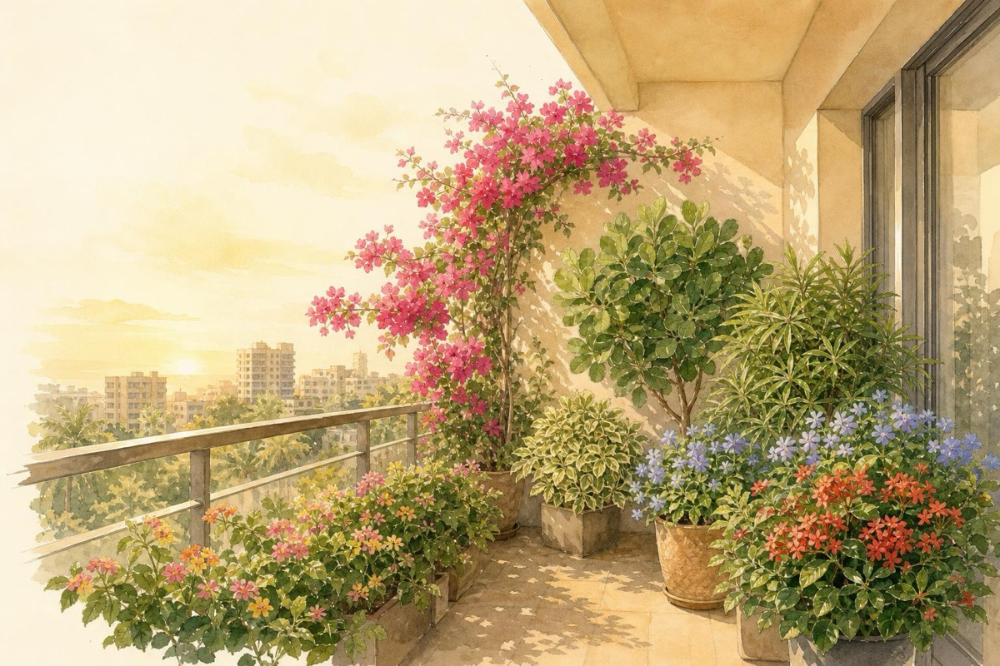
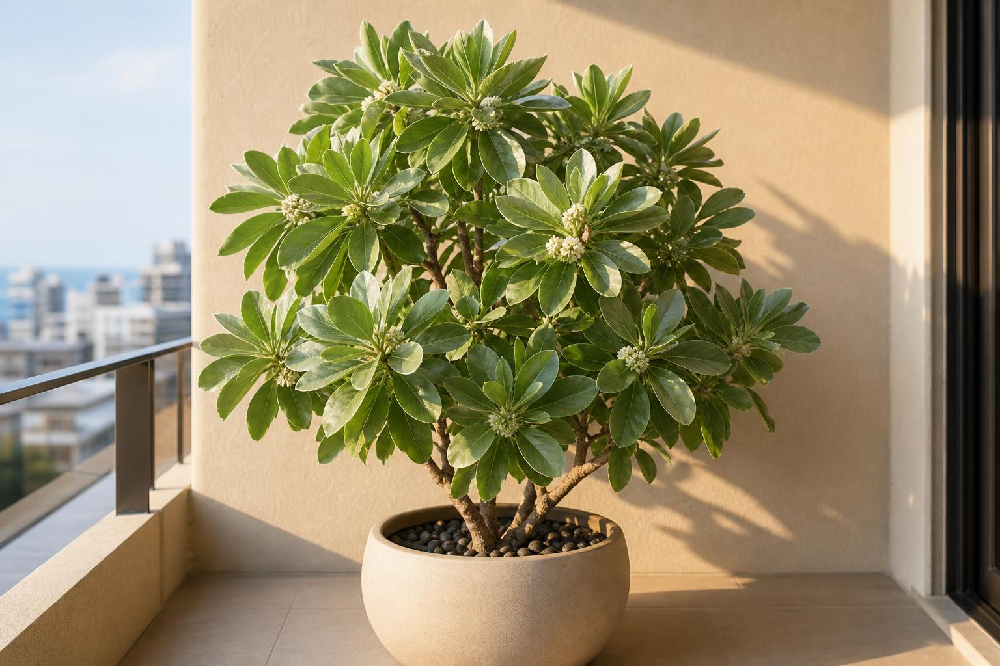
一盆大型植物會替客廳撐出重心，讓空間不只是家具的集合。
適合植物：龜背芋、琴葉榕、天堂鳥

玄關要接住回家的人，不需要熱鬧，但要讓第一眼安定下來。
適合植物：金錢樹、福祿桐、圓葉植物

工作很煩時，旁邊有一點安靜的綠，就像有東西陪你慢下來。
適合植物：孔雀木、小型觀葉、多肉

一束花或小花器，會讓吃飯和聊天多一點被好好對待的感覺。
適合植物：季節花材、香草、小花器

窗邊不是有光就好，植物要能接住光，也不能被光傷到。
適合植物：龜背芋、黃金葛、粗肋草

小盆栽、水耕瓶、小造景能讓櫃面不再只是機器和線條。
適合植物：水耕植物、小盆栽、垂墜植物

這裡要放真的能吹風見光的植物，不寫成一般室內植物。
適合植物：海桐、白水木、斑葉海桐

小盆栽、小動物、畫作與光線可以一起形成家的表情。
適合植物：小盆栽、多肉、水耕組合
同樣是陽台，方位不同，光照、風、曝曬與植物答案都不同。這裡要像指南，但不能像教科書。
光線溫和，適合需要明亮但不曝曬的植物。
日照充足，適合喜光、能承受較高光照的植物。
午後曝曬強，需選耐熱、耐曬且排水好的植物。
光線較弱，適合耐陰、喜散射光的植物。
這裡用卡牌式呈現，不是只有文字說明。使用者要一眼知道：植物能不能留下來，是家的條件決定的。
直射光、散射光、半陰，會決定植物能不能健康留下。
陽台、窗邊、高樓層，風的強弱會改變植物選擇。
東向溫和、南向光足、西向曝曬、北向偏陰，不可混在一起講。
多久澆水、會不會出國、想療癒還是遮擋，都會影響配置。
不是每個人都是綠手指。這一段要幫人快速判斷：我養不養得活、我家光線夠不夠、我會不會忘記澆水、它適合放哪裡，以及它會讓家多出什麼樣的狀態。
先讓每一株植物像一張生活選物卡。 圖片負責第一眼的美感，文字負責判斷：適合誰、怎麼照顧、放在哪裡，和它會把家帶往什麼狀態。
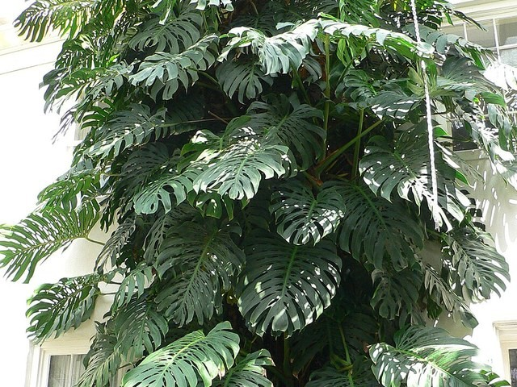
明亮散射光｜水分中等｜需留生長空間
家的意象：大葉撐住空間，像家裡有一個會呼吸的主角。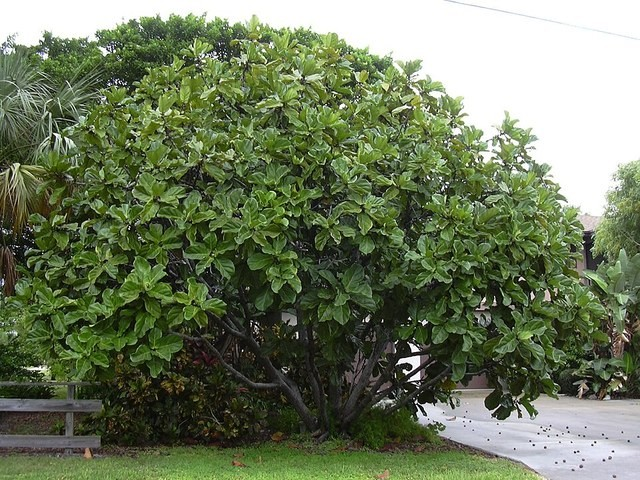
明亮光｜怕亂搬｜需穩定照顧
家的意象：高挑、有氣質，讓客廳像生活雜誌但不冷。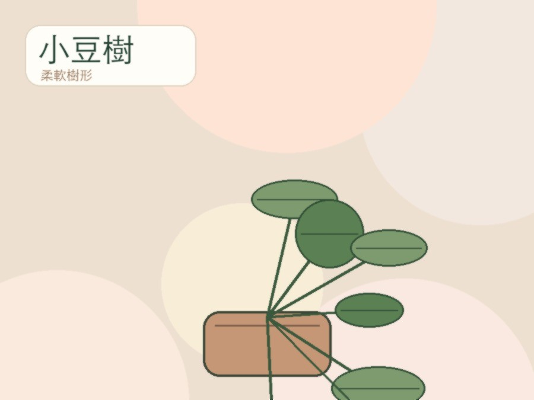
明亮散射光｜水分中等｜需通風
家的意象：讓角落有樹的感覺，溫柔但有骨架。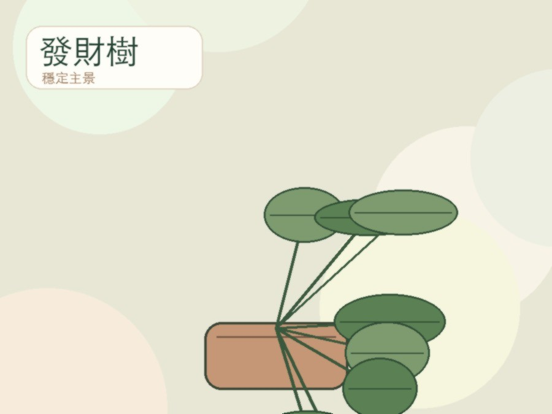
明亮至半陰｜少水｜新手友善
家的意象：穩住客廳，也有慢慢累積的祝福感。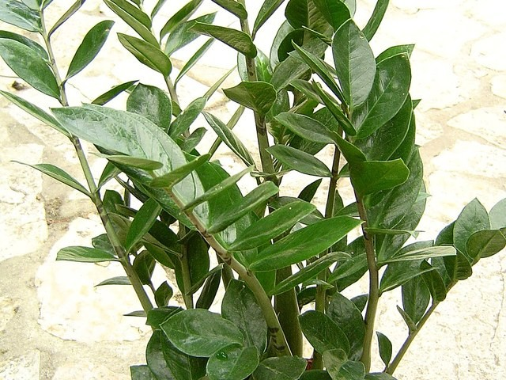
耐低光｜少水｜出國耐受高
家的意象：圓厚葉片像把入口穩住，不是招金感，是累積感。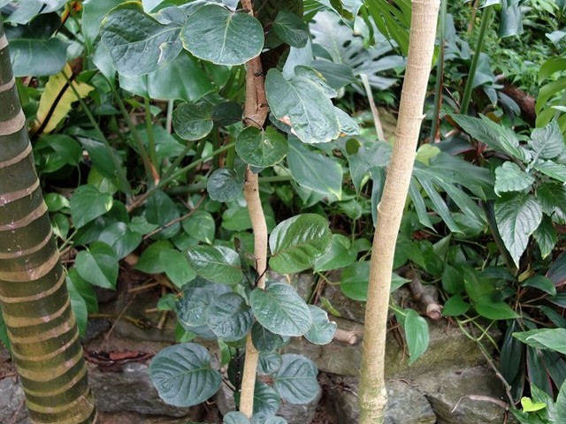
明亮散射光｜水分中等｜怕積水
家的意象：讓進門第一眼更圓滿、更有人味。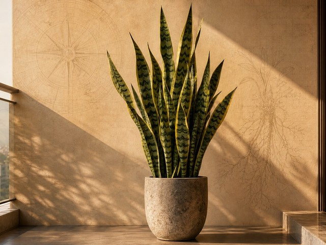
耐陰耐旱｜少水｜出國友善
家的意象：乾淨、挺直，適合需要秩序感的入口。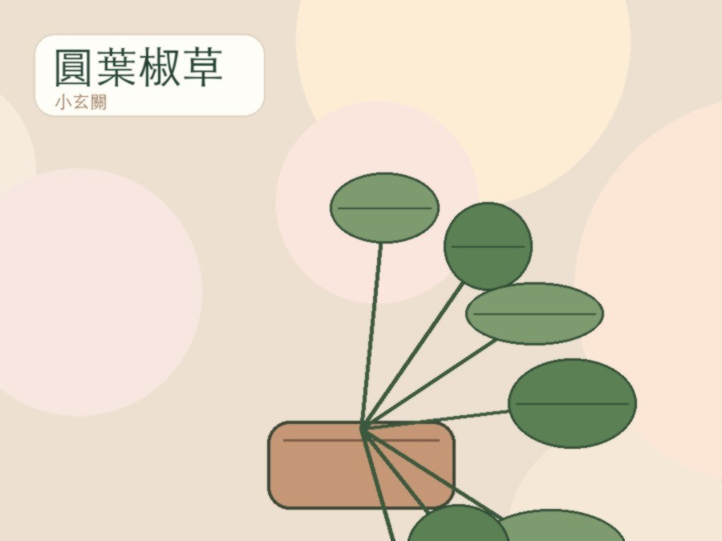
明亮散射光｜少量澆水｜小空間友善
家的意象：小小一盆，也能讓入口有柔和表情。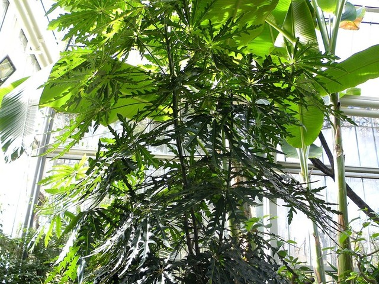
明亮散射光｜水分中等｜避免太乾
家的意象：像一個安靜陪伴，不吵也不搶畫面。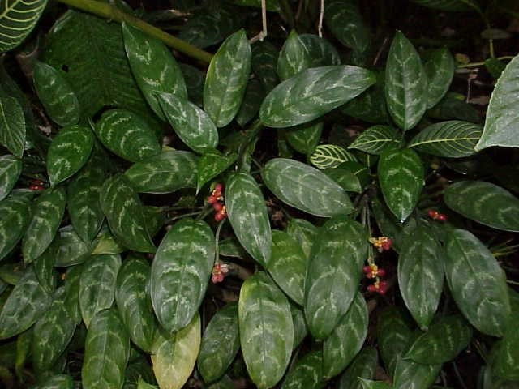
散射光｜水分中等｜避免曝曬
家的意象：用斑紋和顏色讓小角落有層次。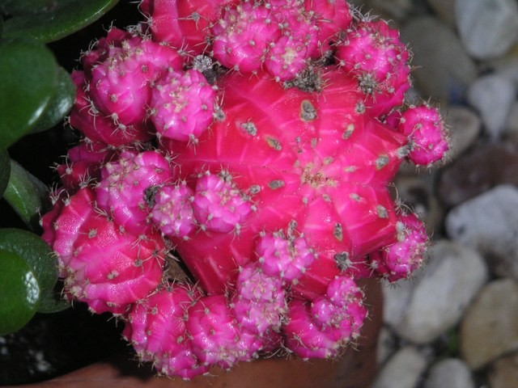
高光｜少水｜怕悶濕
家的意象：小小的生命感，適合慢慢觀察。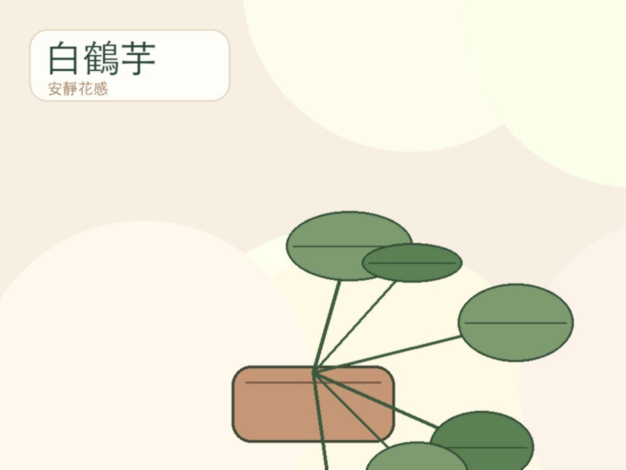
半陰至散射光｜喜濕｜缺水會垂
家的意象：白色花苞讓角落安靜、乾淨、有呼吸。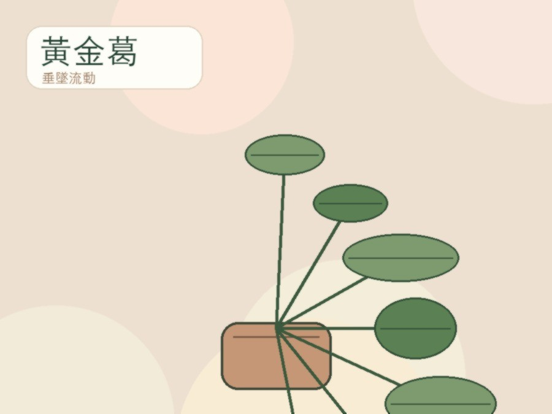
耐陰｜水分彈性高｜很好照顧
家的意象：讓綠意沿著層架流動，冷硬線條變柔。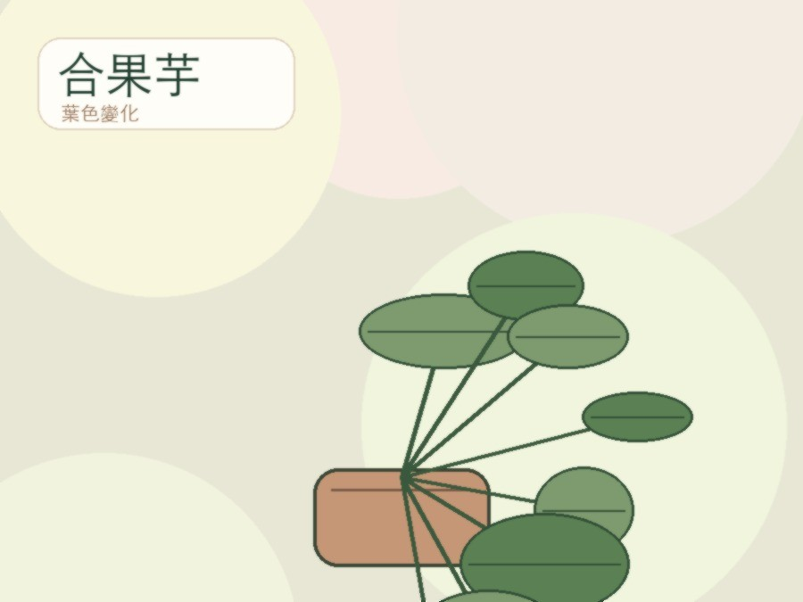
散射光｜水分中等｜可水耕
家的意象：有一點活潑，讓家不只是米色和木頭。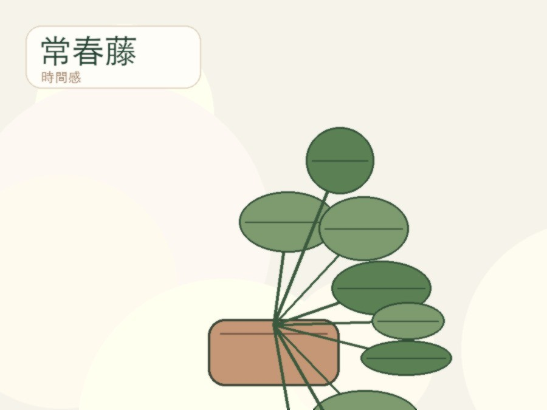
明亮光｜喜通風｜怕悶熱
家的意象：讓牆邊和層架長出時間感。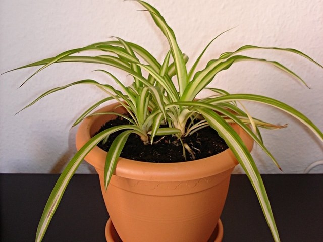
散射光｜水分中等｜繁殖容易
家的意象：像一串會呼吸的線條，讓空間變輕。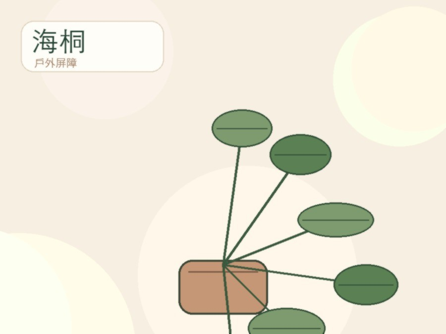
戶外光｜耐風｜需通風
家的意象：形成綠意屏障，替家接住外面的風。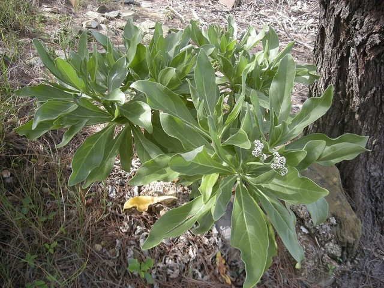
戶外強光｜耐曬｜需排水
家的意象：銀綠葉色有海風感，讓陽台有度假氣息。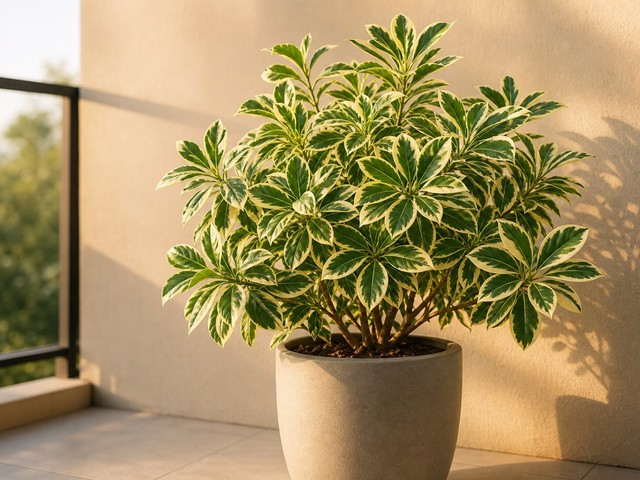
明亮光｜水分中等｜需修剪
家的意象：斑葉讓陽台不只綠，而是有層次。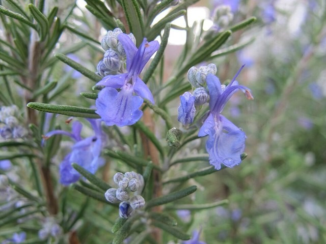
全日照｜少水｜怕悶濕
家的意象：一點香氣，讓陽台和餐桌之間有生活連結。這裡之後會做成 3-step：先看你想改變哪個位置，再看家的光、風與方位，最後看照顧習慣。不是直接丟一株植物給你，而是整理出一份放得住、養得活、也讓空間變好的配置。
客廳、玄關、書桌、餐桌、窗邊或陽台；從你最想改變的地方開始。
光線、通風、東西南北向、開放或半開放，決定植物能不能留下。
你忙不忙、會不會出國、多久澆水一次，決定配置要多好照顧。